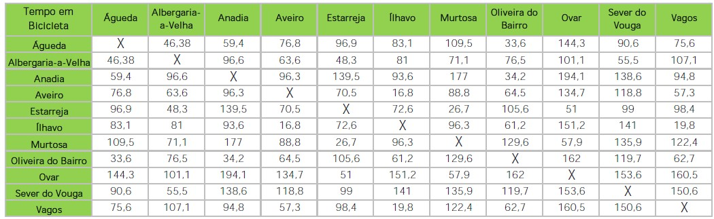

9. Duração média das viagens por meio de transporte
As três tabelas seguintes apresentam o tempo de viagem três modos de transporte diferente em relação às distâncias entre municípios. São eles o automóvel, os transportes públicos que poderá incluir Comboio e Autocarro e ainda o modo ciclável. Os tempos de viagem de automóvel são retirados da menor distância que é indicada pela plataforma do Google Maps. No modo ciclável assumiu-se uma velocidade média de 20 km/h de circulação e atribui-se dessa maneira os tempos de viagem.
- Automóvel

Pela análise da imagem a menor tempo apresentado na deslocação de automóvel é entre os Municípios de Oliveira do Bairro e Anadia e Vagos e Ílhavo com uma duração de 11 minutos. De modo contrário, a maior tempo de deslocação é de 51 minutos entre Murtosa e Anadia.
- Bicicleta

Como se pode observar na imagem os tempos de deslocação de bicicleta são elevados pois as distâncias entre Municípios também são elevadas. Estes tempos são relativos e depende de certos condicionantes como a aptidão física do utilizador e da velocidade média com que consegue estabelecer durante o percurso.